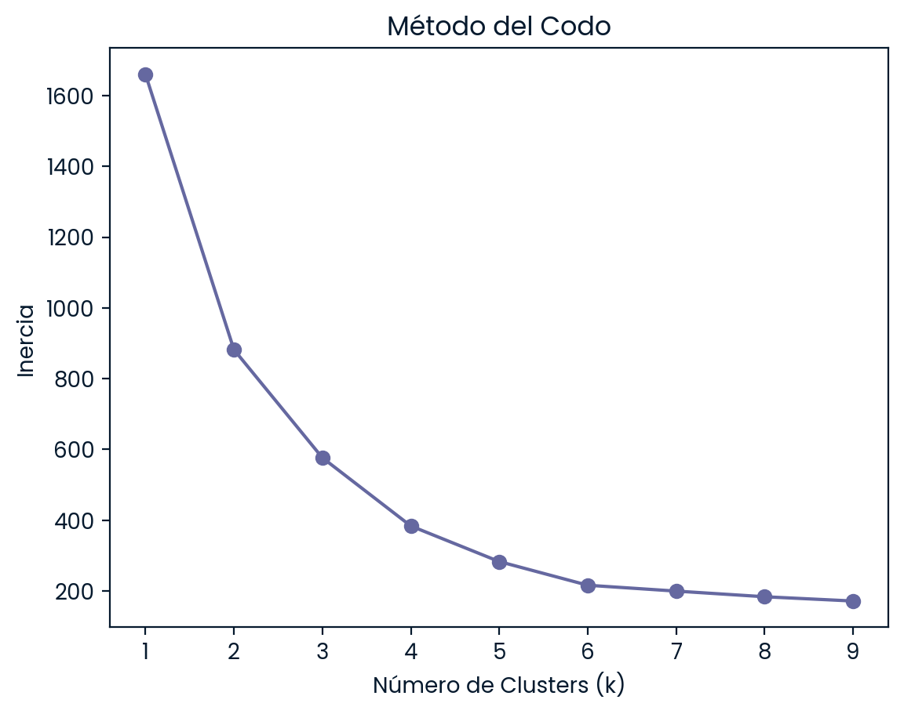
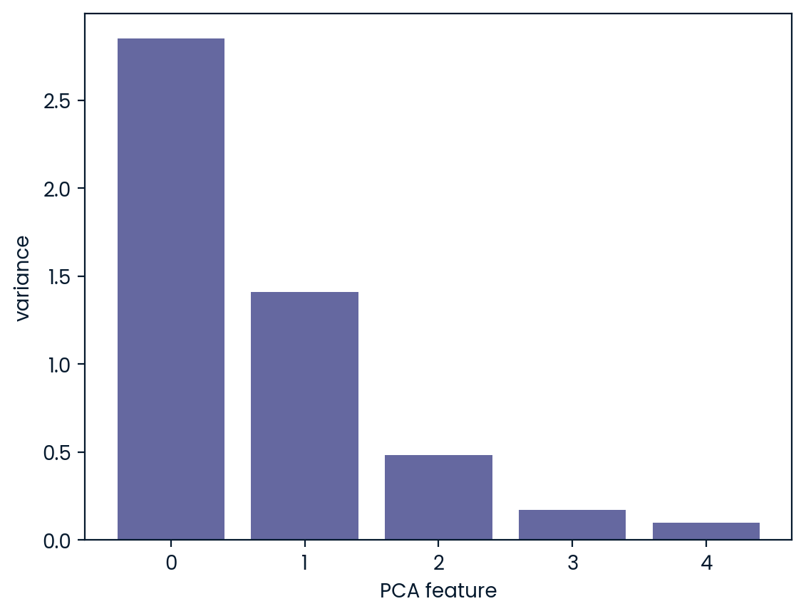
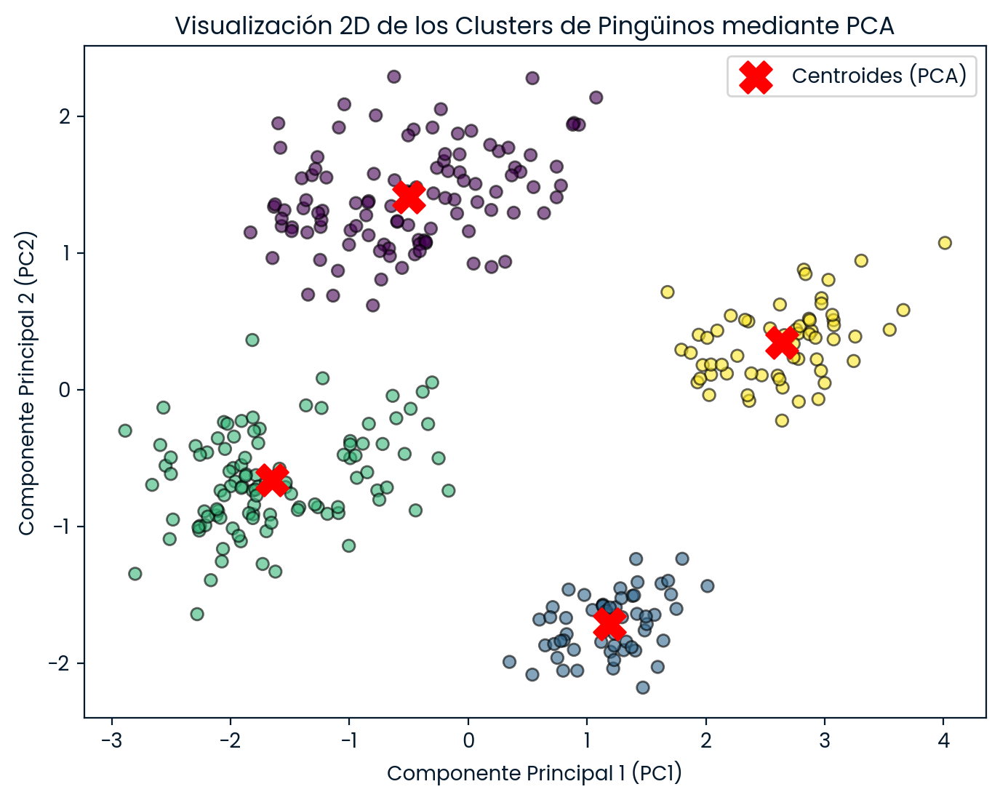
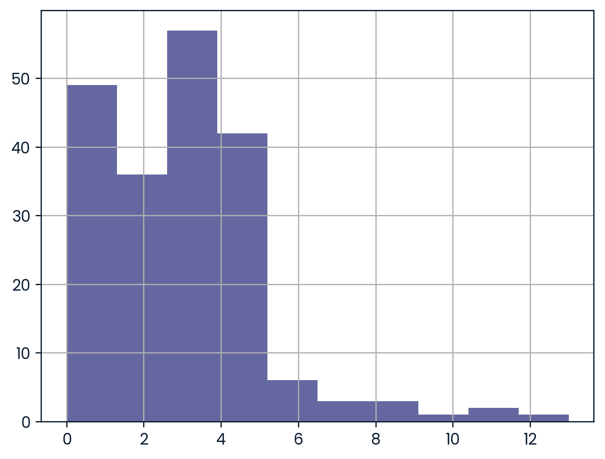
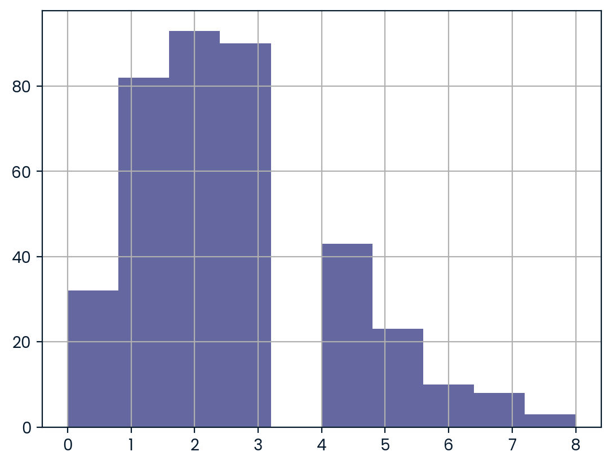

¡Hola! Soy Maximiliano Rojas Taboada
Data Scientist | Machine Learning & AI Specialist
¡Te doy la bienvenida a mi portafolio de Ciencia de Datos e Inteligencia Artificial! Aquí encontrarás proyectos donde transformo datos complejos en modelos predictivos, análisis estadísticos y soluciones accionables, combinando el rigor del método científico con la tecnología.
Acerca de mí
Soy Egresado en Diseño Molecular y Nanoquímica con un Diplomado en Inteligencia Artificial por la Universidad Anáhuac. Apasionado por la intersección entre la ciencia y la tecnología, me especializo en aplicar herramientas de Ciencia de Datos, Machine Learning y Deep Learning al análisis y optimización de sistemas complejos.
Cuento con experiencia práctica en todo el ciclo de vida de los datos: desde Análisis Exploratorio de Datos (EDA), Ingeniería de Características y Modelado Predictivo, hasta el manejo avanzado de Excel adquirido en el sector bancario.
Habilidades tecnológicas
 Excel Avanzado
Excel Avanzado
Competencias clave
Pensamiento analítico, adaptación a entornos cambiantes, comunicación efectiva y trabajo colaborativo.
Mis Proyectos
1. Modelado Predictivo para la Optimización de Cultivos Agrícolas
El objetivo de este proyecto es determinar la variable edafoclimática del suelo con mayor capacidad predictiva individual para clasificar 22 tipos de cultivo mediante Regresión Logística multiclase. El estudio busca ayudar a los agricultores a tomar decisiones informadas sobre la selección de cultivos cuando cuentan con recursos o presupuestos limitados para análisis de laboratorio.
Ver preguntas clave y metodología del proyecto
Preguntas clave:
- ¿Cuál es la distribución y balanceo de las categorías de cultivos en el conjunto de datos?
- De las cuatro variables del suelo (N, P, K, pH), ¿cuál posee el mayor poder predictivo univariado para clasificar los cultivos?
- ¿Qué métrica de evaluación refleja de mejor manera el rendimiento de un modelo multiclase balanceado?
Metodología resumida:
- Análisis Exploratorio (EDA): Verificación de nulos en los 2,200 registros y confirmación de balance perfecto (100 observaciones por cultivo).
- División de datos: Entrenamiento (80%) y prueba (20%) con
random_state = 42. - Modelado univariado: Entrenamiento de 4 modelos independientes de
LogisticRegression(algoritmo multinomial,max_iter = 200), uno por cada propiedad del suelo. - Evaluación: Cálculo del Weighted F₁-score sobre el conjunto de prueba para medir la precisión discriminatoria individual.
Hallazgos y Resultados Clave
- Potasio (K) determinante: La evaluación del Weighted F₁-score identificó al Potasio como la variable de mayor relevancia con un puntaje de 0.2511 (frente a 0.1360 del Fósforo, 0.0946 del Nitrógeno y 0.0453 del pH).
- Optimización de costos en campo: Si un agricultor cuenta con presupuesto limitado para análisis de laboratorio, priorizar la medición de Potasio ofrece casi el doble de capacidad discriminatoria que cualquier otro elemento para una preselección eficiente del cultivo.
2. Agrupación de Especies de Pingüinos de la Antártida con Aprendizaje No Supervisado (K-Means & PCA)
El objetivo de este proyecto es agrupar y clasificar especímenes de pingüinos de Palmer mediante K-Means y PCA (Análisis de Componentes Principales) a partir de sus dimensiones físicas y sexo. El estudio busca comprender la estructura natural de los datos morfológicos, identificar patrones de dimorfismo sexual e interpretar cómo se relacionan las características físicas sin requerir etiquetas previas.
Ver preguntas clave y metodología del proyecto
Preguntas clave:
- ¿Cuál es la cantidad óptima de clusters (k) para agrupar los datos morfológicos y de sexo de los pingüinos?
- ¿Cómo se distribuyen los promedios morfológicos de cada variable en las agrupaciones identificadas?
- ¿Qué porcentaje de la varianza total del conjunto de datos retienen las componentes principales?
- ¿Permiten las componentes principales proyectar los datos en 2D con una clara separación entre clusters y centroides?
Metodología resumida:
- Preprocesamiento: Análisis exploratorio de 332 registros limpios del archivo
penguins.csvy conversión categórica con One-Hot Encoding (sex_MALE). - Estandarización: Escalado de variables numéricas con
StandardScalerpara equilibrar el peso de magnitudes físicas. - Clusters (k óptimo): Evaluación de inercia mediante Método del Codo para k entre 1-9, identificando k = 4.
- Modelado No Supervisado: Entrenamiento de K-Means (k = 4), asignación de etiquetas y cálculo de resumen de promedios.
- Reducción y visualización: Aplicación de PCA (
n_components = 2) para proyectar el espacio multidimensional y ubicar centroides.
Hallazgos y Resultados Clave
- k = 4 óptimo: Diferencia con precisión combinaciones de especie y dimorfismo sexual (macho/hembra), permitiendo interpretar clusters compactos con centroides correctamente posicionados.
- Conservación de varianza con PCA: La proyección 2D captura más del 80% de la varianza total del dataset, mostrando cuatro agrupaciones aisladas entre sí.



3. Predicción de Días de Alquiler de Películas DVD
El objetivo de este proyecto es construir un modelo de regresión supervisado que prediga con precisión el número de días que un cliente mantendrá un DVD alquilado. La empresa de alquiler requiere un modelo con un MSE de 3.0 o menor en el conjunto de prueba para optimizar la gestión de inventario y la planificación logística.
Ver preguntas clave y metodología del proyecto
Preguntas clave:
- ¿Cómo se calcula la duración exacta del alquiler a partir de los datos de fecha y hora registrados?
- ¿Qué características morfológicas del contenido o financieras (tarifas, costos, características especiales) aportan mayor información predictiva?
- ¿Cómo seleccionar de forma automatizada las características más relevantes para reducir la complejidad del modelo?
- ¿Es posible lograr un error cuadrático medio (MSE) inferior al objetivo de 3.0 requerido por el negocio?
Metodología resumida:
- Análisis Exploratorio e Ingeniería de características (EDA & Feature Engineering):
- Exploración inicial del dataset (15,861 registros) para verificar tipos de datos, distribuciones y ausencia de nulos.
- Conversión de las columnas
rental_dateyreturn_datea formato fecha para calcular la variable objetivorental_length_days(duración en días). - Extracción de variables binarias a partir de texto no estructurado en
special_features(deleted_scenesybehind_the_scenes).
- Preprocesamiento y división del dataset: Eliminación de variables de fecha y texto para conformar la matriz de características X (14 variables) y división en datos de entrenamiento (80%) y prueba (20%) con
random_state = 9. - Selección de características mediante Regularización Lasso: Entrenamiento de un modelo Lasso (α = 0.3,
random_state = 9) para descartar variables irrelevantes ajustando sus coeficientes a cero. - Modelado predictivo y evaluación: Entrenamiento de un modelo de ensamble
RandomForestRegressor(100 estimadores,random_state = 9) utilizando únicamente las características optimizadas por Lasso y evaluación del desempeño en el conjunto de prueba mediante el Error Cuadrático Medio (MSE).
Hallazgos y Resultados Clave
- Reducción efectiva de dimensionalidad: La regularización Lasso filtró automáticamente las 14 variables iniciales a solo 4 características clave:
['amount', 'amount_2', 'length_2', 'rental_rate_2']. - Cumplimiento de la meta de negocio: El modelo final
RandomForestRegressoralcanzó un MSE de 2.39 en el conjunto de prueba, superando exitosamente el umbral máximo de 3.0 exigido por la empresa. - Optimización de inventario e impacto: La capacidad de predecir la duración del alquiler permite calcular con precisión el retorno de películas, evitar quiebres de stock y confirmar que las tarifas de alquiler (
amountyrental_rate) condicionan directamente el tiempo de retención.
4. Análisis Estadístico de Goles en el Fútbol Internacional
Prueba de hipótesis no paramétrica para determinar si en los partidos internacionales de fútbol femenino se marcan significativamente más goles por partido que en los masculinos desde 2002.
Ver preguntas clave y metodología del proyecto
Preguntas clave:
- ¿Sigue la variable de total de goles por partido una distribución normal en ambos grupos?
- ¿Qué prueba de hipótesis es la adecuada para comparar dos distribuciones numéricas independientes no normales?
- ¿Existe evidencia estadística suficiente para rechazar la hipótesis nula (**H₀**) con α = 0.10?
- ¿Se marcan estadísticamente más goles por partido en la Copa Mundial Femenina que en la Masculina?
Metodología resumida:
- Preprocesamiento & Filtrado: Carga y conversión temporal (post-2002), creación de variable objetivo *total_score*.
- Evaluación de Normalidad: Histogramas y confirmación visual de sesgo a la derecha, descartando pruebas paramétricas.
- Prueba No Paramétrica: Ejecución de **U de Mann-Whitney** unilateral hacia la derecha para evaluar si la distribución femenina es mayor.
- Planteamiento de hipótesis: H₀ (goles iguales) vs Hₐ (goles femeninos mayores), evaluado contra α = 0.10.
Hallazgos y Resultados Clave
- Decisión Estadística: Se rechazó H₀ (p-value = 0.0051 ≤ 0.10), confirmando que se anotan más goles en partidos femeninos en promedio.
- Sólido respaldo: El resultado del p-value (0.0051) es inferior incluso a α = 0.01, sustentando con rigor metodológico el artículo de investigación.

